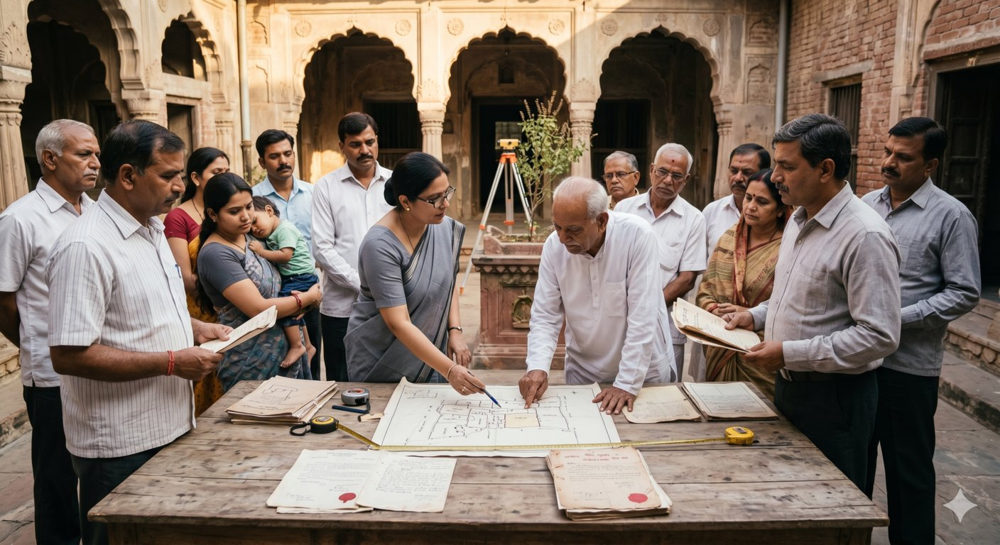

An NRI brother has been living abroad for many years. His brother has remained in India, managing, cultivating or occupying the family's property.
Years later, the NRI discovers that his brother is claiming:
“I have been in possession of this property for decades. It is now mine.”
Can long possession really convert one brother's possession of ancestral or jointly owned property into exclusive ownership?
Ordinarily, no.
Mere long possession does not automatically extinguish another co-owner's or coparcener's rights.
Where the parties are brothers or other co-heirs, the crucial questions are whether there has been ouster, hostile assertion, exclusive possession, knowledge of the hostile claim and completion of the applicable limitation period.
The Supreme Court's decision in MALLIKARJUNAIAH V. NANJAIAH, 2019 INSC 578, is particularly relevant. The Court rejected an adverse-possession claim between related parties because the necessary hostility and exclusive assertion of ownership had not been established.
At the same time, an NRI should never assume that overseas residence makes the property dispute irrelevant. If a co-owner openly asserts exclusive ownership and the legal requirements of adverse possession are subsequently established, serious limitation consequences can arise.
1. First: Is It Really “Ancestral Property”?
The expression “ancestral property” is often used loosely in family discussions.
Legally, the first task is to determine the property's actual character.
In a Mitakshara Hindu joint family, qualifying coparcenary property carries rights by birth. But not every property inherited from a parent or grandparent necessarily remains coparcenary property.
The manner in which the property was acquired and subsequently devolved must be examined.
For example, the Supreme Court in Uttam v. Saubhag Singh, (2016) 4 SCC 68, examined the effect of succession under Section 8 of the Hindu Succession Act and held, on the facts before it, that the property had ceased to retain its joint-family character in the hands of the successors, who held defined interests as tenants-in-common.
Important Legal Distinction
Not every inherited property is automatically coparcenary property. The property's mode of acquisition, succession history and devolution must first be examined.
Therefore, before asking whether a brother acquired ownership through long possession, a lawyer should determine:
- Who originally acquired the property?
- Was it ancestral/copracenary property in the legal sense?
- Who were the coparceners?
- When did the relevant ancestor die?
- Did a partition occur?
- Did succession take place under Section 6 or Section 8 of the Hindu Succession Act?
- Were there registered transfers, releases, gifts or settlements?
- Did the property cease to have a joint-family character?
- What is each person's present legal share?
This distinction can completely change the legal remedy.
2. A Brother May Have a Share—But Not Automatically the Entire Property
Consider a simple example.
A father leaves qualifying joint-family property to two sons, A and B.
A moves abroad.
B remains in India and:
- lives in the ancestral house;
- cultivates the land;
- pays property taxes;
- manages the property; and
- receives income from it.
Twenty years later, B says:
“I have looked after this property for twenty years. It is now exclusively mine.”
That statement, by itself, is not enough.
If A and B are legally entitled co-owners or coparceners, B's possession does not automatically become hostile merely because A lives abroad.
The fact that B pays taxes, manages the property or remains physically present may be evidence concerning possession, but it does not by itself establish exclusive title.
3. Hindu Succession Act, 1956 — Section 6 and the 2005 Amendment
Where the property is Mitakshara coparcenary property, Section 6 of the Hindu Succession Act, 1956 is central.
The Hindu Succession (Amendment) Act, 2005 substantially altered Section 6.
A daughter of a coparcener became a coparcener by birth, with the same rights and liabilities in coparcenary property as a son.
The amendment came into force on 9 September 2005.
This is important in NRI family-property disputes because a family's share calculation cannot necessarily be made simply by counting the sons.
A daughter may also have a coparcenary interest.
4. Vineeta Sharma v. Rakesh Sharma: Daughters' Coparcenary Rights
In:
Vineeta Sharma v. Rakesh Sharma & Ors., (2020) 9 SCC 1
the Supreme Court's three-Judge Bench clarified the operation of amended Section 6.
The Court held that a daughter acquires coparcenary rights by birth and that the father's being alive on 9 September 2005 is not a prerequisite to the daughter's coparcenary right.
The judgment resolved the conflict between earlier decisions including Prakash v. Phulavati, (2016) 2 SCC 36 and Danamma @ Suman Surpur v. Amar, (2018) 3 SCC 343.
Why this matters to an NRI brother
An NRI brother may assume:
“My father had two sons, so the property belongs only to the two brothers.”
That assumption may be legally incorrect.
Depending on the nature of the property, family structure and relevant dates, daughters may also have coparcenary rights.
Therefore, the entire family tree must be reconstructed before calculating shares.
5. Long Possession Is Not Automatically Adverse Possession
The answer is no.
The Limitation Act, 1963 provides the framework for adverse possession and limitation.
Section 27 — Extinguishment of Right to Property
Section 27 provides that, when the limitation period prescribed for a suit for possession expires, the person's right to the property may be extinguished.
Article 65 — Possession Based on Title
Article 65 provides a 12-year limitation period for a suit for possession of immovable property based on title, calculated from the point when the defendant's possession becomes adverse to the plaintiff.
The critical issue is therefore:
When did the possession become adverse?
It is not necessarily the date on which the brother first entered or started living on the property.
Thus:
20 years of occupation ≠ 20 years of legally established adverse possession.
6. What Must Be Proved for Adverse Possession?
In Karnataka Board of Wakf v. Government of India, (2004) 10 SCC 779, the Supreme Court emphasized the need to establish the nature and continuity of adverse possession, including the relevant date, openness, continuity and hostile character of possession.
The claimant relying on adverse possession must establish facts showing possession that is, in substance:
- open;
- continuous;
- peaceful;
- exclusive;
- hostile to the true owner's title; and
- maintained for the legally prescribed period.
The claimant must also establish when the possession became adverse and the circumstances showing the true owner's knowledge or constructive knowledge, as applicable.
This is particularly important where the claimant and alleged true owner are family members.
7. Ouster: The Critical Issue Between Brothers
For disputes between brothers or other co-owners, ouster deserves separate attention.
Where one brother is a co-owner, exclusive possession by itself is generally insufficient to establish ouster.
The Supreme Court's decision in:
P. Lakshmi Reddy v. L. Lakshmi Reddy, 1957 SCR 195 : AIR 1957 SC 314
remains a leading authority.
The Court explained that possession of one co-heir is, in law, ordinarily treated as possession of all co-heirs. To establish adverse possession against another co-heir, there must be evidence of:
- Open assertion of hostile title;
- Exclusive possession and enjoyment;
- Knowledge of that hostile assertion by the other co-heir; and
- Circumstances sufficient in law to constitute ouster.
The key principle
Where one brother is a co-owner, he does not ordinarily become the exclusive owner merely by occupying the property. There must be a clear and unequivocal denial of the other co-owner's rights, brought to that co-owner's knowledge, followed by possession satisfying the requirements of adverse possession.
Importantly, an express demand and express denial are not always indispensable if the surrounding circumstances unmistakably establish notorious hostile possession. But the evidence must be sufficiently clear to establish ouster.
Therefore:
Exclusive possession ≠ automatic ouster.
Family occupation ≠ automatic adverse possession.
Long possession ≠ automatic ownership.
This is one of the most important protections available to a co-owner who has been living abroad.
8. Mohd. Zainulabudeen v. Sayed Ahmed Mohideen: Mere Non- Participation Is Not Ouster
In:
Mohd. Zainulabudeen (since deceased) by LRs v. Sayed Ahmed Mohideen & Ors., (1990) 1 SCC 345
the Supreme Court considered the circumstances in which one co-heir's possession and enjoyment could affect another co-heir's rights.
The principle is particularly relevant where one family member remains in possession while another does not participate in day-to-day management.
Mere non-participation does not automatically establish ouster.
The essential question remains whether there was a hostile assertion of title and possession sufficient to exclude the other co-heir's rights.
For an NRI
The fact that an NRI:
- lives abroad;
- does not cultivate the land;
- does not occupy the ancestral house; or
- leaves day-to-day management to another family member
does not, by itself, establish abandonment of legal rights.
9. Mallikarjunaiah v. Nanjaiah: A Direct Brother-to-Brother Example
One of the most useful authorities for this subject is:
Mallikarjunaiah v. Nanjaiah & Ors., Civil Appeal No. 7768 of 2011, decided 26 April 2019, 2019 INSC 578.
The dispute involved brothers and an encroached portion of land.
The respondents relied upon long possession and claimed that they had acquired title by adverse possession.
The lower courts accepted the adverse-possession claim concerning a one- gunta portion.
The Supreme Court reversed that conclusion.
The Court found, among other things, that the necessary hostility and exclusive assertion of ownership had not been established to the required standard and that mere long possession between related parties was insufficient.
Legal lesson
The brother in possession cannot simply argue:
“I have been here for decades, therefore the property is mine.”
The court must examine how the possession began, whether it was joint or permissive, when hostility allegedly arose, whether the other brother knew of the hostile claim, and whether the statutory requirements were actually completed.
This makes Mallikarjunaiah particularly useful when advising an NRI brother facing a long-possession claim.
10. Permissive or Family Possession: Why the Starting Point Matters
Suppose an NRI brother says:
“I allowed my brother to stay in the ancestral house while I was working in Dubai.”
That fact may be highly significant.
If possession began with permission, the brother cannot ordinarily treat the entire period of permissive occupation as adverse possession.
The person asserting adverse possession must establish when and how the character of possession changed from permissive or co-owner possession into hostile possession.
Therefore, an NRI should preserve:
- Emails;
- Letters;
- WhatsApp messages;
- Family correspondence;
- Tax/payment records;
- Property-management records;
- Rental arrangements;
- Documents acknowledging joint ownership;
- Requests for partition; and
- Communications concerning the NRI's share.
A single contemporaneous document acknowledging joint ownership can become important evidence in later litigation.
11. Ravinder Kaur Grewal v. Manjit Kaur: Adverse Possession Can Have Substantive Consequences
A balanced legal analysis must also recognize that adverse possession is a real doctrine.
In:
Ravinder Kaur Grewal & Ors. v. Manjit Kaur & Ors., (2019) 8 SCC 729
a three-Judge Bench considered the legal consequences of perfected adverse possession and the interaction between Articles 64 and 65 and Section 27 of the Limitation Act.
The judgment confirms that once adverse possession is legally perfected, it can have substantive consequences and may be relied upon in appropriate circumstances.
But it does not mean:
“Anyone who has lived on property for 12 years automatically becomes its owner.”
The claimant must first establish the legal ingredients of adverse possession.
Therefore:
Long possession → not necessarily adverse possession.
Adverse possession proved for the statutory period → potentially serious consequences for the former owner's title.
12. Paying Property Tax or Having Mutation Does Not Automatically Create Title
A brother may produce:
- Property-tax receipts;
- Patta/revenue entries;
- Electricity records;
- Water connections;
- Municipal assessments;
- Agricultural records; or
- Land-revenue receipts.
These documents may be relevant evidence, but they do not automatically establish exclusive title.
Similarly, mutation is generally concerned with fiscal or revenue administration and does not, by itself, conclusively determine title.
If the NRI discovers that the property has been mutated exclusively in the brother's name, the following questions should be investigated:
- When was the mutation made?
- On what document?
- Was notice given?
- Was there a registered partition?
- Was there a release deed?
- Was there a gift or settlement?
- Did succession take place?
- Did the NRI consent to the transaction?
The appropriate challenge will depend on the State's revenue procedure and the underlying title dispute.
13. What If the Brother Has Sold or Transferred the Property?
This is more serious than a simple possession dispute.
A co-owner may generally transfer his own lawful interest, but cannot ordinarily convey a better title than he possesses.
If the brother claims to have transferred the entire property, the NRI should immediately examine:
- Sale deed;
- Gift/settlement deed;
- Partition deed;
- Release deed;
- Earlier title deeds;
- Power of Attorney;
- Encumbrance records;
- Mutation records; and
- Subsequent transactions.
Depending on the facts, the legal proceedings may involve:
- Declaration;
- Partition;
- Separate possession;
- Cancellation of an instrument;
- Injunction;
- Recovery of possession; or
- Other consequential relief.
The correct remedy depends on the property's legal character and the document involved.
14. Can an NRI File a Partition Suit?
Yes.
Where an NRI has a legally recognized share in joint or co-owned property, a partition action may be appropriate.
Depending on the circumstances, the reliefs may include:
- Declaration of share;
- Partition;
- Separate possession;
- Permanent or interim injunction;
- Accounts of income;
- Mesne profits, where legally available; and
- Relief against unauthorized transfers.
Before filing, however, the NRI should first establish what kind of property it is and what share the NRI actually owns.
A partition suit based on the assumption that every inherited property remains coparcenary property can create unnecessary complications.
15. Does Living Abroad Mean the NRI Has Abandoned the Property?
No.
Physical absence and legal abandonment are different concepts.
An NRI may live and work abroad for decades without automatically losing a lawful property interest.
However, that does not mean that delay is harmless.
If the brother openly asserts exclusive ownership, excludes the NRI, executes documents claiming sole title and the NRI remains inactive for a prolonged period, limitation and adverse-possession issues may become increasingly difficult.
Therefore:
NRI status is not a substitute for timely legal action.
16. Real Reported NRI-Family Property Dispute
A relevant reported decision is:
G. Narayan Reddy v. P. Narayana Reddy, C.C.C.A. No. 86 of 2005, decided 19 February 2016 (Andhra Pradesh High Court).
The dispute involved an NRI plaintiff and a family-related defendant concerning property in Hyderabad.
The litigation involved issues concerning possession, an alleged gift document and adverse possession. The appeal was ultimately dismissed on the facts of that case.
The case illustrates an important practical reality:
NRI status does not prevent property litigation, and prolonged absence combined with disputed documents and possession can create significant evidentiary difficulties.
Practical lesson
An NRI should periodically verify:
- Title;
- Encumbrance status;
- Revenue records;
- Possession;
- Tax records; and
- Registered transactions.
Early verification can be far easier than reconstructing the property's history after decades of family dispute.
17. Uttam v. Saubhag Singh: Do Not Assume Every Inherited Property Is Coparcenary
In:
Uttam v. Saubhag Singh, (2016) 4 SCC 68
the Supreme Court considered the effect of succession under Section 8 of the Hindu Succession Act.
On the facts before it, the Court held that the property had ceased to retain its joint-family character after succession and that the successors held their interests as tenants-in-common.
Why this matters
Before filing a partition case, the lawyer should determine:
Is the property still coparcenary property, or has it devolved into separate undivided shares?
That distinction can affect:
- the nature of the NRI's right;
- the persons entitled to shares;
- the applicable legal provisions; and
- the appropriate remedy.
18. Important Legal Developments Relevant to NRI Property Rights
There is no special amendment providing that an NRI's property rights are immune from adverse possession merely because the NRI lives abroad.
However, several legal developments are highly relevant.
A. Hindu Succession (Amendment) Act, 2005
The amended Section 6 gave daughters coparcenary rights by birth equal to sons.
B. Vineeta Sharma, 2020
The Supreme Court clarified that daughters acquire coparcenary rights by birth under amended Section 6, subject to the statutory framework and the savings relating to earlier dispositions, partitions and alienations.
This can materially benefit an NRI daughter or other female coparcener whose interest was previously overlooked.
C. Mallikarjunaiah, 2019
The Supreme Court reinforced the need for proper proof before long possession between related co-owners can become adverse possession.
D. Ravinder Kaur Grewal, 2019
The Court clarified the substantive consequences of perfected adverse possession while recognizing that the doctrine still requires strict proof.
The important takeaway
These developments do not abolish adverse possession.
Instead, they require the court to ask precise questions:
What was the legal character of the property?
What was the claimant's original basis of possession?
When did possession allegedly become hostile?
Was there ouster?
Was the hostile assertion known to the other co-owner?
Was the statutory period completed?
19. What Should an NRI Do After Discovering a Brother's Exclusive Ownership Claim?
Step 1 — Reconstruct the family tree
Identify:
- Parents;
- Grandparents;
- Brothers;
- Sisters;
- Predeceased heirs;
- Children of deceased heirs; and
- Other relevant successors.
Step 2 — Establish the property's history
Determine:
- Original owner;
- Acquisition document;
- Succession;
- Partition;
- Transfers;
- Deaths; and
- Existing legal shares.
Step 3 — Obtain certified property records
Collect:
- Sale deeds;
- Parent/title deeds;
- Encumbrance Certificate;
- Revenue records;
- Mutation records;
- Tax records;
- Registration records;
- Partition deeds;
- Release deeds; and
- Gift/settlement documents.
Step 4 — Identify the first hostile assertion
Ask:
When did the brother first claim exclusive ownership?
That date may be critical to the limitation analysis.
Step 5 — Preserve evidence
Retain communications acknowledging the NRI's share or joint ownership.
Step 6 — Obtain a limitation opinion
Do not simply calculate 12 years from the date the brother entered the property.
The crucial question is generally:
When, if ever, did the possession become legally adverse?
Step 7 — Select the appropriate remedy
Depending on the facts, the remedy may include:
- Partition;
- Declaration;
- Separate possession;
- Injunction;
- Cancellation of documents;
- Recovery of possession;
- Accounts or mesne profits; or
- Other appropriate civil proceedings.
20. Illustrations
Illustration 1 — Brother Lives in the Ancestral House for 25 Years
A and B are legally entitled to shares in the property.
A moves to Canada.
B remains in India for 25 years and pays taxes and utility bills.
Can B automatically claim the entire property?
No.
Long occupation, tax payment and management do not by themselves establish ouster or adverse possession.
Illustration 2 — Clear Hostile Assertion
B sends A a registered notice stating:
“You have no share in this property. I am the sole owner.”
B thereafter excludes A, executes documents asserting exclusive ownership and continues openly in possession.
What changes?
The matter becomes substantially more serious.
The date and circumstances of the hostile assertion become critical.
A should obtain legal advice immediately rather than waiting for another decade.
Illustration 3 — Agricultural Land
B has cultivated family agricultural land for 20 years while A has lived abroad.
B says:
“I have cultivated the land for 20 years, so it belongs to me.”
Is cultivation enough?
Not necessarily.
Management and cultivation by one co-owner do not automatically establish ouster.
The court must examine the complete history of possession and any evidence of hostile assertion.
Illustration 4 — Registered Settlement Deed
B produces a registered settlement deed purporting to transfer the entire property to himself.
A says he never signed it.
What should A do?
This is no longer merely a long-possession issue.
The execution, authority, authenticity and legal validity of the document must be examined immediately.
Depending on the circumstances, proceedings may involve declaration, cancellation and consequential possession relief.
21. Common Mistakes by NRI Property Owners
❌ “My brother has lived there for 12 years, so he owns it.”
Not necessarily. The legal starting point for adverse possession must be established.
❌ “I live abroad, so I have automatically lost my property.”
No. Overseas residence by itself does not extinguish a lawful property interest.
❌ “My brother pays all the taxes, so he is the owner.”
Tax payment is not, by itself, conclusive proof of title.
❌ “His name is in the revenue records, so I cannot challenge him.”
Revenue entries do not necessarily determine title.
❌ “I will deal with it after I return to India.”
Delay can create evidentiary and limitation difficulties.
❌ “I am the true owner, so I can remove him myself.”
Avoid forcible self-help. Use lawful remedies.
22. NRI Ancestral Property Protection Checklist
An NRI should ideally maintain copies of:
- Family tree;
- Death certificates of relevant ancestors;
- Original and certified title documents;
- Partition deeds;
- Release deeds;
- Gift/settlement deeds;
- Wills;
- Encumbrance Certificates;
- Revenue records;
- Mutation records;
- Property-tax receipts;
- Agricultural records;
- Bank/payment records;
- Power of Attorney documents;
- Family correspondence;
- Evidence acknowledging joint ownership;
- Evidence of demands for partition; and
- Evidence of any hostile claim.
23. Frequently Asked Questions
24. Nutshell: The Core Legal Position
A brother's long possession of ancestral, coparcenary or jointly owned property does not automatically make him the exclusive owner.
The legal analysis should proceed in this order:
Nature of Property → Legal Share → Nature of Possession → Hostile Assertion → Ouster → Adverse Possession → Limitation → Possible Extinguishment of Rights
For an NRI, the most important questions are:
- Is the property actually ancestral/coparcenary property?
- What is the NRI's legal share?
- Is the brother a co-owner or coparcener?
- How did the brother obtain possession?
- Was possession permissive, joint or otherwise lawful?
- When did he first assert exclusive ownership?
- Was that assertion communicated to the NRI?
- Was there legally sufficient ouster?
- Has the statutory limitation period run from the point possession became adverse?
- Has any sale, gift, settlement, release or other document been executed?
The principle from P. Lakshmi Reddy is especially important: mere exclusive enjoyment by one co-heir is not enough; open hostile assertion, exclusive possession and knowledge sufficient to constitute ouster must be established.
25. Senior Counsel's Perspective
When an NRI client asks:
“My brother has been there for 20 years. Does that mean I have lost my property?”
the answer should not begin with the number 20.
The first question should be:
“20 years from what event?”
Was it 20 years from:
- the date the brother entered with family permission?
- the death of the parent?
- an alleged partition?
- a registered transfer?
- or a clear and communicated hostile assertion of exclusive ownership?
These are legally different situations.
The second question is:
“What exactly was the property?”
Was it:
- coparcenary property?
- inherited property?
- separately owned property?
- property that devolved under Section 8?
- property already partitioned into defined shares?
The third question is:
“What evidence exists?”
An old email or letter in which the brother acknowledges the NRI's share may be highly significant.
For an NRI, the appropriate strategy is therefore:
Establish the title. Establish the share. Establish the property's legal character. Reconstruct the possession history. Identify any hostile assertion. Examine ouster and limitation. Preserve the evidence. Then choose the appropriate remedy.
Most importantly, do not delay merely because the dispute is within the family.
Family relationships change. Documents disappear. Witnesses become unavailable. Property may be transferred to third parties.
Early legal assessment can therefore be critical.
26. Conclusion
A brother residing in India for many years does not automatically acquire exclusive ownership over ancestral, coparcenary or jointly owned property merely because another brother has been living overseas.
Indian law recognizes adverse possession, but the doctrine requires strict proof.
Where the parties are brothers, co-owners or co-heirs, possession by one is not ordinarily presumed to be hostile merely because the other lives abroad or does not participate in day-to-day management.
The NRI should therefore examine:
- The property's legal character;
- The applicable succession law;
- The complete family tree;
- The NRI's legal share;
- The history and nature of possession;
- Any evidence of ouster;
- Any hostile assertion;
- The applicable limitation p eriod;
- Any transfer documents; and
- The appropriate legal remedy.
The law does not simply say:
“Whoever stays in the ancestral house longest automatically becomes the owner.”
The real question is whether the person in possession can establish a legally valid title that has extinguished or displaced the NRI's rights.
For NRI families, early title verification, documentary preservation and timely legal action can be critical in preventing a long-running ancestral-property dispute from becoming substantially more difficult.
Key Statutory Provisions
Hindu Succession Act, 1956
- Section 6 — Devolution of interest in coparcenary property
- Section 8 — General rules of succession in cases of a male Hindu dying intestate
- Section 19 — Mode of succession of two or more heirs
Limitation Act, 1963
- Section 27 — Extinguishment of right to property
- Article 64 — Possession based on previous possession
- Article 65 — Possession based on title
Specific Relief Act, 1963
- Section 5 — Recovery of specific immovable property
- Section 6 — Summary remedy following unlawful dispossession
Key Case Laws
- P. Lakshmi Reddy v. L. Lakshmi Reddy, 1957 SCR 195 : AIR 1957 SC 314 — Co-heir possession, ouster and hostile assertion.
- Mohd. Zainulabudeen v. Sayed Ahmed Mohideen, (1990) 1 SCC 345 — Hostile assertion and ouster among co-heirs.
- Thakur Kishan Singh v. Arvind Kumar, (1994) 6 SCC 591 — Permissive possession does not automatically become adverse.
- Karnataka Board of Wakf v. Government of India, (2004) 10 SCC 779 — Essential requirements of adverse possession.
- Rame Gowda v. M. Varadappa Naidu, (2004) 1 SCC 769 — Protection of settled possession and due process.
- Maria Margarida Sequeira Fernandes v. Erasmo Jack de Sequeira, (2012) 5 SCC 370 — Proper adjudication of possession and avoidance of forcible self-help.
- Uttam v. Saubhag Singh, (2016) 4 SCC 68 — Effect of succession under Section 8 and the character of inherited property.
- Mallikarjunaiah v. Nanjaiah & Ors., Civil Appeal No. 7768 of 2011, decided 26 April 2019, 2019 INSC 578 — Long possession between related co-owners insufficient without proper proof of hostile and exclusive possession.
- Ravinder Kaur Grewal v. Manjit Kaur, (2019) 8 SCC 729 — Adverse possession and the operation of Articles 64/65 and Section 27.
- Vineeta Sharma v. Rakesh Sharma, (2020) 9 SCC 1 — Daughter's coparcenary rights by birth under amended Section 6.
- G. Narayan Reddy v. P. Narayana Reddy, C.C.C.A. No. 86 of 2005, decided 19 February 2016 — Reported NRI/family property dispute involving possession and adverse-possession issues.
© RRC Law Associates